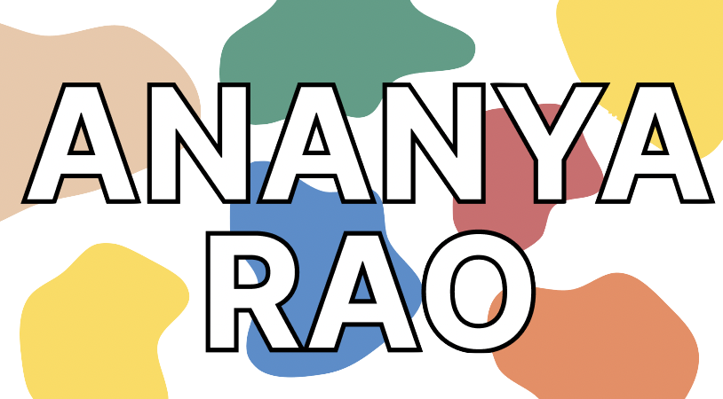
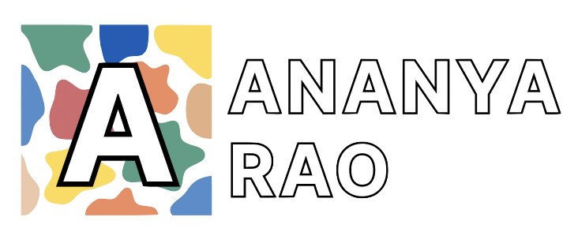
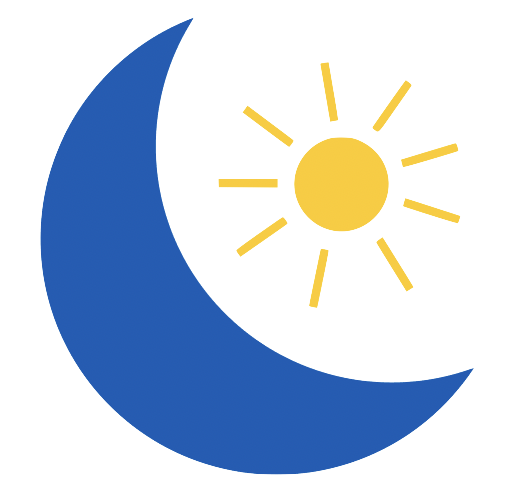
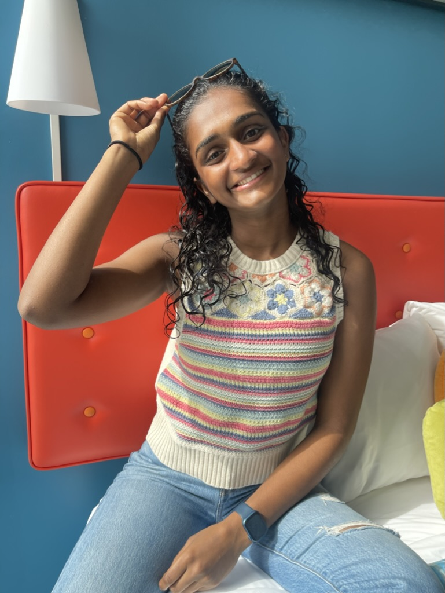

C
O
N
T
A
C
T
M
E
created by Ananya Rao 2023




I am majoring in Computer Science with a minor in Data Science at Rice University. Inside and outside of Rice, I have been able to step outside of my academic comfort zone.
I enjoy surrounding myself with high achieving peers and mentors who embrace curiosity and learning new things. Placing myself in challenging situations has taught me the importance of hard work and perseverance.
My programming skills include Python, Java, JavaScript, HTML, and CSS.
My interests include the intersection between technology and healthcare, the power of data analytics, and using UI/UX to create accessible and efficient technological solutions.


select a thumbnail below to view a larger image of my design